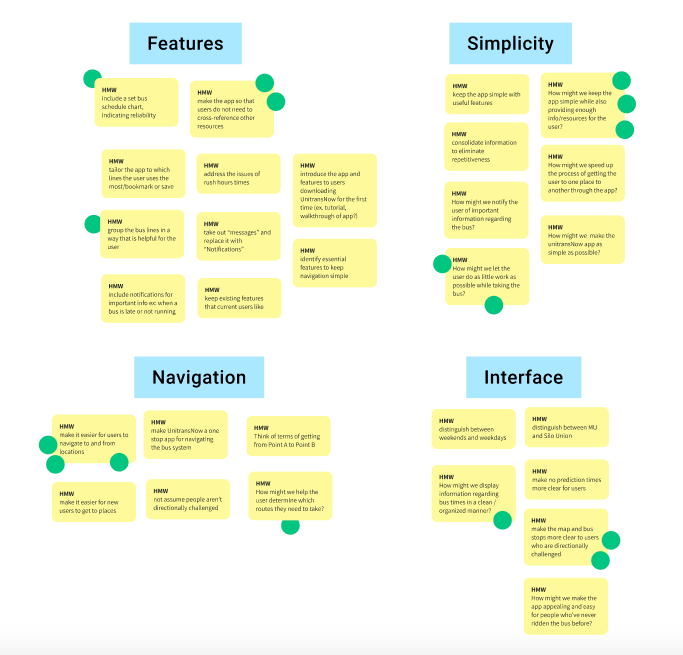
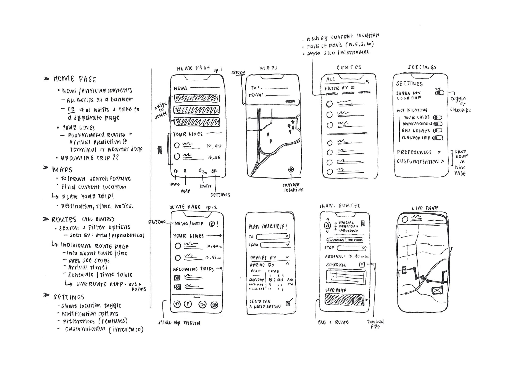

UnitransNow
Redesigning a bus navigation app for UC Davis students, hoping to make public transportation in a college town a bit more of a pleasant experience
Team
Nadia Anees, Jasmine Chou, Emily Lam, and Lily Nguyen (Project Manager)
Overview
My team was part of the first cohort of Design Interactive, a student-run design consultancy at UC Davis. We had approximately six weeks to redesign the UnitransNow app for students navigating the bus system run by ASUCD (Associated Students of UC Davis). Our goal was to simplify useful features from the current app while incorporating elements of other resources that students use when tracking bus lines and schedules.
Problem Statement
College students at UC Davis find themselves using various resources to navigate the bus system because the UnitransNow app does not sufficiently compile all the necessary tools and resources in one place.
Process
We focused on user research because we wanted to understand the pain points that make it difficult for students to know when their bus is arriving or leaving. In sending surveys and doing a competitive analysis, we wanted to get a better idea of which app functions were confusing or not helpful. From there, we made the features as intuitive as possible so students wouldn’t have to juggle with multiple navigation apps to figure out arrival predications or how to get from one location to another. During my week as the sprint lead, my responsibilities consisted of ensuring that we had a design system to ensure consistency across all our pages, and maintain the process of developing our final high fidelity prototypes.
Brainstorming & Ideation
Through Affinity mapping our team was able to prioritize which aspects of the app we wanted to redesign, in terms of the navigation features, updated information about bus lines, and layout/aesthetic of the app. Our main focuses were directed towards making the app/information more intuitive and interactive for the user’s experience.
 Low to High Fidelity

GIFS by Emily Lam